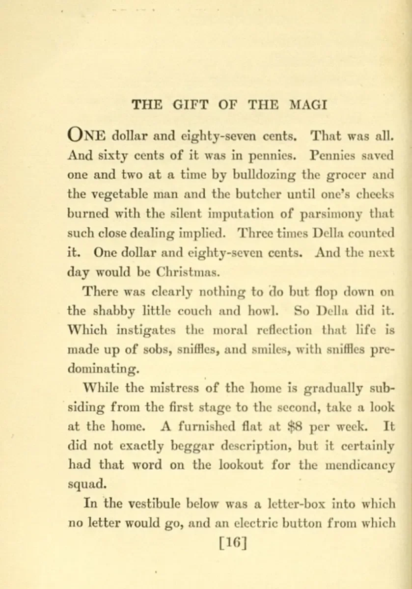
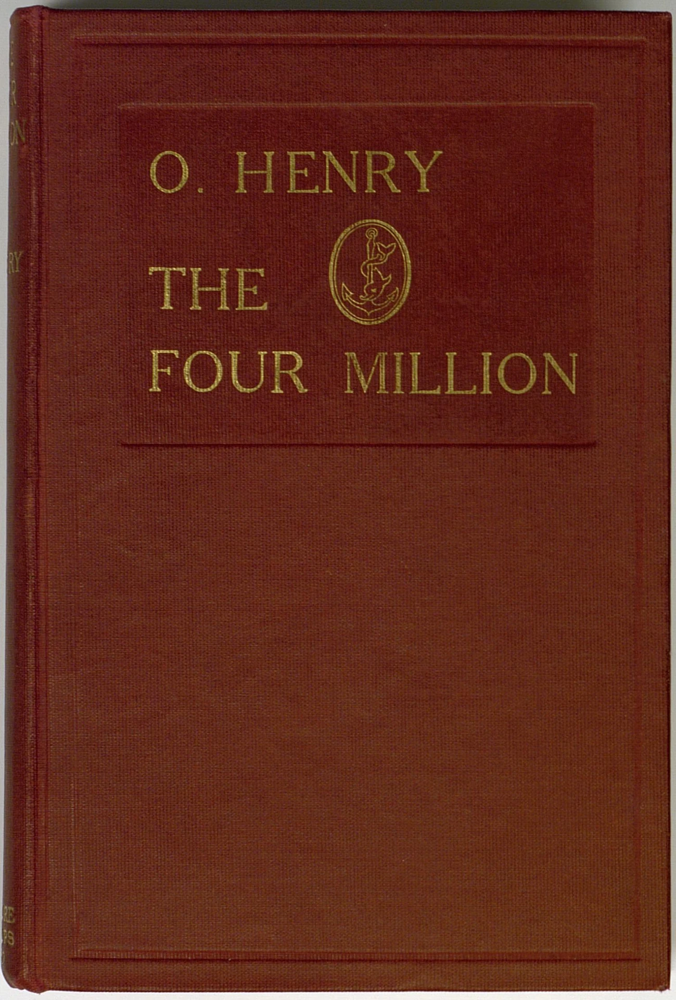
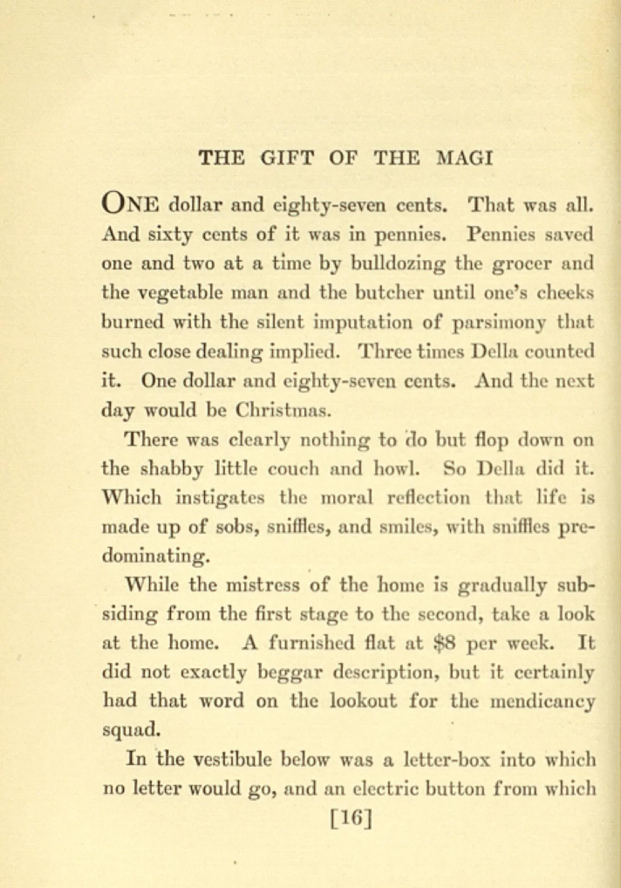

아직 펼치지 않은 카드겨울밤에 읽는 이야기 · 2크리스마스 선물1달러 87센트로 사랑하는 사람에게 선물을 사야 해요. 여러분이라면 무엇을 팔겠어요?돈이 조금밖에 없는데 선물을 사야 해. 너라면 어떻게 할래?
크리스마스이브미국 뉴욕 · 일주일에 8달러짜리 셋방
크리스마스 선물
크리스마스이브, 뉴욕의 작은 셋방. 델라의 손에는 1달러 87센트뿐이에요. 1906년에 나온 책 『4백만』의 16쪽, 이 이야기의 첫 쪽을 한 줄씩 펼쳐 원문과 우리말로 읽어 보세요.
크리스마스 전날, 델라 아줌마한테는 동전 몇 개뿐이었대. 옛날 책의 첫 쪽을 한 줄씩 펼쳐서 같이 읽어 보자.
검수 전 시안이에요(기준서 1판 보탬 11). 원문은 그림 속 글자를 읽어 옮기지 않고, 사우스플로리다 대학 Lit2Go가 1906년 책을 옮겨 적은 글과 맞춰 봤어요. 우리말은 이 안내서가 옮겼어요. 상상은 ‘눈 감고 상상해 보기’에만 썼어요.
시안 확인용카드 단계 미리 보기
1
400만 명의 이야기
1905년 12월 10일, 이 이야기는 뉴욕의 신문 「뉴욕 월드」의 일요판 잡지에 처음 실렸어요. 그 무렵 O. 헨리는 이 신문에 한 주에 한 편씩 이야기를 쓰고 있었어요.
이듬해 4월, 그의 이야기들을 묶은 책 『4백만』이 나왔어요. 머리말은 이렇게 말해요. 얼마 전 누군가 뉴욕에서 눈여겨볼 만한 사람은 ‘400명’뿐이라고 했지만, 더 지혜로운 사람인 인구 조사원이 400만 명으로 셈을 늘렸다고요.

책 제목 ‘4백만’은 그때 뉴욕에 살던 사람 모두를 가리켜요. 델라와 짐도 그 가운데 두 사람이에요. 이 이야기는 책 16쪽에서 시작해요.
이 빨간 책에 델라 아줌마랑 짐 아저씨 이야기가 들어 있어. 뉴욕 사람 400만 명 이야기 가운데 하나래.
물어보기우리 동네 사람들 이야기를 책으로 만든다면, 누구 이야기를 넣고 싶어?
2
첫 쪽을 한 줄씩
책을 펴면 16쪽 맨 위에 제목이 있어요. 첫 쪽에는 델라가 가진 돈과, 그 돈을 모은 방법과, 부부가 사는 집이 차례로 나와요. 굴대를 끌어 내리며 한 줄씩 읽어 보세요.
종이 아래쪽 굴대를 끌어 내리거나 ‘한 줄 더 펼치기’를 눌러 보세요.

『4백만』(1906) 16쪽, 「크리스마스 선물」의 첫 쪽 · O. 헨리 책 · 퍼블릭 도메인 · 위키미디어 공용
펼친 만큼 줄이 읽혀요. 읽은 줄은 아래에 차례로 모여요.
첫 쪽을 끝까지 펼쳤어요. 이야기는 다음 쪽으로 이어져요.
그날 델라는 무릎 아래까지 내려오는 머리카락을 20달러에 팔아요. 그리고 21달러를 치르고 수수한 백금 시곗줄을 사요. 아버지와 할아버지에게서 물려받은 짐의 금시계에 달아 줄 줄이에요. 집으로 돌아온 델라에게는 87센트가 남았어요.
저녁 7시, 커피를 끓이고 고기를 구울 프라이팬을 데워 둘 즈음 짐이 들어와요. 짐은 늦는 법이 없어요. 짐이 내민 꾸러미에는 델라가 브로드웨이의 진열창 앞에서 오래 바라보던 머리빗 한 벌이 들어 있어요. 짐은 시계를 팔아 그 빗을 샀어요.
짐은 소파에 털썩 눕더니 두 손을 머리 뒤에 받치고 웃으며 말해요. “델, 우리 선물은 넣어 두고 한동안 간직하자. 지금 쓰기에는 너무 좋은 것들이야.”
델라 아줌마는 동전을 세고 또 셌어. 세 번이나! 그러고는 소파에 엎드려 엉엉 울었대.
물어보기델라 아줌마가 동전을 셀 때, 어떤 소리가 났을까?
눈 감고 상상해 보기
크리스마스이브의 오후, 셋방 창가에 빛이 희미해요. 탁자 위에 동전이 짤랑, 하나씩 쌓여요. 낡은 소파의 꺼진 쿠션, 아래층 현관으로 스미는 찬바람. 창밖에는 회색 뒤뜰의 회색 담장 위로 회색 고양이가 걸어가요.
눈을 감아 봐. 동전이 짤랑짤랑. 창밖에는 회색 고양이가 회색 담장 위를 살금살금 걸어가.
나의 자리
이야기는 델라가 돈을 세는 하루만 보여 줘요. 같은 날, 시계를 팔러 간 짐의 하루는 어땠을까요?
델라 아줌마는 동전을 세 번이나 셌어. 그날 짐 아저씨는 시계를 팔러 가면서 무슨 생각을 했을까?
마음에 닿는 한 줄을 고르거나 직접 써 보세요. 한 줄을 남기면 이 자리의 도장이 찍혀요. 이 기기에만 저장돼요.
더 깊이
궁금한 칸만 펼쳐 읽어도 괜찮아요.
알고 보면
동방박사 제목의 magi는 동방에서 별을 따라와 아기 예수에게 황금과 유향과 몰약을 드린 박사들이에요(마태복음 2장 1~11절). O. 헨리는 끝에서 그들이 ‘구유에 누운 아기’에게 선물을 가져왔다고 쓰는데, 마태복음은 박사들이 아기가 있는 ‘집’에 들어갔다고 적어요.
스바 여왕과 솔로몬 왕 작가는 델라의 머리카락과 짐의 시계를 성경 속 두 사람에 빗대요. 스바 여왕이 바람길 건너편 셋방에 살았다면 델라는 머리를 창밖에 늘어뜨려 여왕의 보석을 초라하게 만들었을 것이고, 솔로몬 왕이 건물 관리인이었다면 짐은 지날 때마다 시계를 꺼내 왕을 샘나게 했을 거라고요(열왕기상 10장).
‘딜링엄’과 ‘D’ 우편함 이름표의 ‘딜링엄’은 짐이 주급 30달러를 받던 좋은 시절에 내건 이름이에요. 주급이 20달러로 줄자, 부부는 이름을 수수한 ‘D’ 한 글자로 줄일까 생각한다고 작가는 농담해요.
스물두 살 짐은 겨우 스물두 살에 집안을 짊어졌어요. 작가는 그에게 새 외투가 필요했고 장갑도 없었다고 적어요.
기록마다 다른 점
어디서 썼나 뉴욕의 식당 피츠 태번은 O. 헨리가 자기 가게 둘째 칸 자리에서 이 이야기를 썼다고 소개해요(1903년이라고 적어요). 그가 살던 어빙 플레이스 55번지의 기념판은 그 집 앞방에서 “열에 들뜬 두 시간” 만에 썼다고 적어요. 둘 다 전해지는 이야기예요.
처음 실린 때 신문에는 1905년 12월 10일에 실렸고, 책은 이듬해 4월에 나왔어요. 피츠 태번이 적은 1903년은 신문에 실린 때보다 2년 이르러요.
원문 읽고 듣기
확인한 날 · 2026년 11월 18일 · 바뀌기 쉬운 정보라 정기적으로 다시 확인해요
이 이야기는 저작권이 끝나 영어 원문을 누구나 읽을 수 있어요. 자원봉사자들이 읽어 녹음한 낭독도 무료로 들을 수 있어요(13분쯤).
뉴욕 어빙 플레이스 55번지에는 O. 헨리가 이곳에서 이 이야기를 썼다고 적은 기념판이 붙어 있어요.
첫 쪽 끝까지 금박
16쪽을 끝까지 펼쳐 아홉 줄을 모두 읽으면 카드에 금박이 입혀져요.
끝까지 펼쳐 모든 줄 읽기
아이와 함께 채색
아이와 함께 ‘영화처럼 보기’를 끝까지 보면 카드가 채색돼요.
아이와 함께 ‘영화처럼 보기’를 끝까지 보기
근거 보기 (8)
- Lit2Go(사우스플로리다 대학 FCIT): O. 헨리 『4백만』(1906) 「The Gift of the Magi」 옮겨 적기 — 첫 쪽 원문, 20달러·21달러·87센트, 7시, 머리빗, 짐의 말, 스바 여왕과 솔로몬, ‘딜링엄’, 스물두 살, 회색 고양이, ‘구유의 아기’
- History.com: 1905년 12월 10일 「뉴욕 선데이 월드」 잡지에 실림, 이듬해 4월 『4백만』, 「뉴욕 월드」에 한 주에 한 편(1903~1906)
- 위키문헌: 『4백만』(1906) — 머리말(‘400명’과 인구 조사원의 ‘400만’), 차례(16쪽)
- 위키미디어 공용: 『4백만』 첫판 표지(1906년 4월 10일, McClure, Phillips) 정보
- 위키미디어 공용: 『4백만』 16쪽 그림 정보
- 역사 표지판 데이터베이스(HMdb): 어빙 플레이스 55번지 기념판 — 앞방에서 두 시간 만에, 피츠 태번의 주장
- 피츠 태번 누리집: 우리 가게의 역사 — 둘째 칸 자리, 1903년
- LibriVox: 「The Gift of the Magi」 낭독 정보
그림·사진·소리 출처
‘처음 만나는 기독교 문화’의 깊은 카드예요. 실제 인물의 사진은 쓰지 않았어요. 카드 단계와 남긴 글은 이 기기에만 저장돼요.